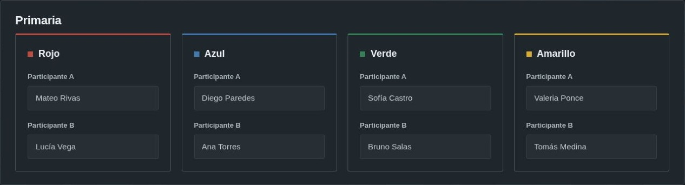
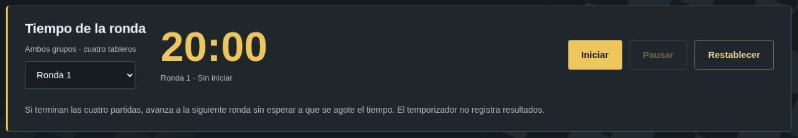
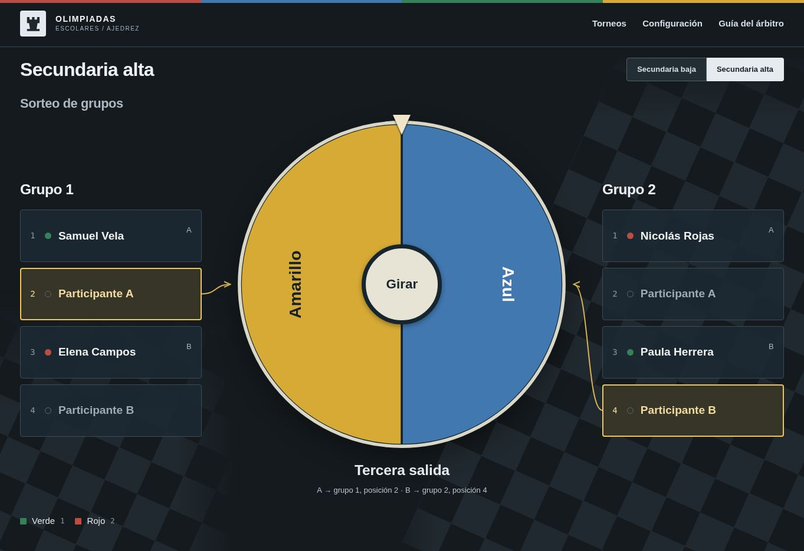
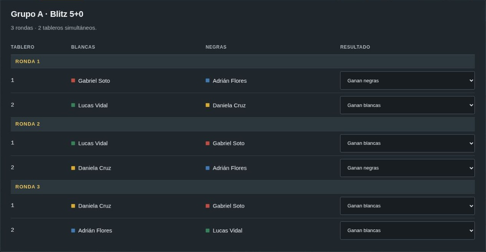

Preparar el torneo
Cada categoría tiene ocho jugadores: dos por color. Son tres torneos independientes.
Victoria: 2 puntos; tablas: 1; derrota: 0. Al terminar los grupos, revisa la clasificación: los líderes disputan el campeonato. En secundaria baja también juegan los segundos; en alta, todos juegan contra quien terminó en su misma posición del otro grupo. Las siguientes secciones explican el tiempo y el manejo de las partidas de cada categoría.
- Registra en Configuración las categorías de tu salón. Las demás pueden quedar vacías. A es quien cursa mayor grado; a igual grado, quien tiene fecha de nacimiento más antigua. B es el otro participante.
- Revisa la conducta y los multiplicadores. Las penalizaciones se anotan por color y se comparten entre las categorías configuradas en esa computadora.
- Pulsa Guardar cambios. Para corregir la configuración guardada, pulsa Editar y vuelve a guardar.
- Abre el panel del árbitro de la categoría. En Sorteo, pulsa Abrir sorteo para usar la pantalla pública.

Los horarios muestran el peor caso previsto: todas las partidas consumen su tiempo completo y las finales requieren Armagedón. La jornada real probablemente será bastante más corta, especialmente en primaria. Si terminan todas las partidas de una ronda, registra los resultados e inicia la siguiente antes de la hora prevista. En primaria se retiran seis jugadores después de los grupos. En secundaria baja se retiran cuatro; los otros cuatro juegan la final o el cruce de 3.º–4.º. En alta continúan los ocho. Quienes terminan un cruce de una partida pueden retirarse sin esperar el cierre de la final.
Primaria
Cada estudiante juega tres partidas de grupo. El líder de cada grupo pasa a la final; los demás comparten puestos según su clasificación. El ahogado es tablas en todas las fases.
Grupos: 20 minutos por partida
No se usa reloj por jugador ni se pide celular a los niños. En la pestaña Grupos, selecciona la ronda e inicia el temporizador común de 20 minutos para los cuatro tableros. Puedes pausarlo por una incidencia y reanudarlo. Conserva el tiempo al recargar o cambiar de pestaña; la pantalla pública también lo muestra.

Al cumplirse los 20 minutos, congela los tableros que sigan jugando y cuenta el material. Gana quien tenga más de un punto de ventaja (al menos 2). Con un punto de diferencia o igualdad, registra tablas.
| Peón | Caballo | Alfil | Torre | Dama | Rey |
|---|---|---|---|---|---|
| 1 | 3 | 3 | 5 | 9 | No puntúa |
Excepción muy rara: si cortar en ese instante falsearía un intercambio o permitiría aprovecharse de una captura de último segundo, el árbitro puede conceder una jugada más para recapturar. El árbitro decide si corresponde y limita la continuación a esa recaptura.
Antes de jugar, informa a los niños que las partidas tienen un límite de 20 minutos y una regla de resolución al terminar. Explica los detalles si preguntan.
Pieza soltada, pieza movida
Rige en toda primaria, también en la final y el Armagedón: una jugada legal queda hecha al soltar la pieza. Puedes cambiar de elección mientras sostienes la pieza; después de soltarla, la jugada queda fijada.
Final con reloj supervisado
Dos partidas de 15+0 por jugador, alternando piezas. Un organizador aporta el celular, supervisa el reloj y lo pulsa si los niños se olvidan. No se permite aprovechar esos olvidos para consumir el tiempo del rival. Si queda 1–1, Armagedón directo.
El color inicial de la final se elige por desempeño de grupos, con los mismos criterios descritos más abajo. En la final, cada jugador dispone de su propio tiempo y pierde si lo agota conforme a las reglas del reloj.
Secundaria baja y alta
Las tres categorías comparten el procedimiento de sorteo, registro, clasificación y final. En secundaria baja y alta, los grupos se juegan a 5+0; en primaria, con el límite compartido explicado arriba. Cada categoría conserva sus propios datos.
Cada estudiante de secundaria lleva su celular exclusivamente para usar Chess Clock de Chess.com. Se utiliza uno por tablero: bastan cuatro para los ocho jugadores de una categoría; pedir que todos lo lleven asegura equipos de respaldo.
La aplicación es gratuita, sin anuncios, sencilla y ligera. Permite pausar y ajustar el tiempo de cada jugador. Instálala antes de la jornada y prueba el reloj con la batería cargada y las notificaciones silenciadas.
Cuándo cuenta una jugada en secundaria
La jugada solo se considera realizada al presionar el reloj. Hasta pulsarlo, el jugador puede ajustar su elección de jugada. Una jugada ilegal se reclama después de que el rival haya pulsado.
Si el rival mueve pero olvida pulsar, es legal quedarse pensando mientras corre su tiempo. Esto se advierte expresamente como incentivo para atender al reloj. Si pasan dos medios-movimientos sin que ninguno pulse, el árbitro pausa, les advierte y reanuda con el reloj del jugador que debe mover.
Si el celular se apaga, se vuelve a encender. Se exige avisar previamente que llegue bien cargado.
Jugada ilegal en secundaria
- Pausa el reloj si detectas una jugada ilegal de tu oponente después de que pulse su reloj.
- Llama al profesor encargado. El árbitro comprueba la infracción.
- El árbitro añade 30 segundos a tu reloj si confirma la jugada ilegal del rival y reanuda la partida. Los jugadores no modifican el tiempo por su cuenta.
Sorteo en la pantalla pública
Los lugares resaltados y las flechas indican dónde irán el A y el B del próximo color. Al terminar cada giro, el color sale de la ruleta. El avance se conserva al recargar. Después del tercer giro se asigna también el último color; pulsa Confirmar grupos para pasar al torneo. Para volver a ver las asignaciones, pulsa Sorteo.

Registrar los grupos
- Confirma el sorteo. Revisa que ambos grupos tengan sus cuatro participantes. El panel del árbitro recibe las asignaciones automáticamente.
- Juega las tres rondas de la pestaña Grupos. Son dos tableros simultáneos por grupo. Cada jugador disputa tres partidas: A lleva negras dos veces y B lleva blancas dos veces.
- Registra cada resultado en su desplegable. Victoria: 2 puntos; tablas: 1; derrota: 0. En secundaria, cada partida es de cinco minutos por jugador, sin incremento; en primaria, 20 minutos totales.
- Revisa Clasificación. Los líderes juegan la final; los segundos disputan 3.º–4.º. En alta, los terceros disputan 5.º–6.º y los cuartos 7.º–8.º. Si queda un empate total, tiene prioridad B; entre participantes del mismo rol, registra al B efectivo por menor grado y luego fecha de nacimiento más reciente.

Orden de desempates dentro de un grupo
- Puntos.
- Mini-clasificación entre los jugadores empatados.
- Enfrentamiento directo cuando quedan dos; si hicieron tablas, favorece a quien llevó negras.
- Sonneborn-Berger (SB).
- Victorias.
- Menos penalizaciones de conducta.
- Prioridad B; entre jugadores del mismo rol, B efectivo por menor grado y luego fecha de nacimiento más reciente. El árbitro registra ese criterio, no decide libremente.
La clasificación del panel aplica estos criterios. SB pondera los resultados según los puntos obtenidos por los rivales.
Final y definición de puestos
Si un cruce de puestos enfrenta a dos jugadores del mismo color, se les informa en ese momento que la partida solo define sus puestos y que pueden acordar tablas. Este aviso no se da en la final por el campeonato: se busca un ganador para la premiación.
Al completar los grupos, el panel prepara los cruces entre posiciones equivalentes. Se juegan en paralelo con la primera partida de la final, con cuatro tableros disponibles.
| Categoría | Cruces después de grupos |
|---|---|
| Primaria | 1.º contra 1.º: campeonato. |
| Secundaria baja | 1.º contra 1.º: campeonato. 2.º contra 2.º: puestos 3.º–4.º. |
| Secundaria alta | 1.º contra 1.º: campeonato. 2.º, 3.º y 4.º contra su equivalente: puestos 3.º–4.º, 5.º–6.º y 7.º–8.º. |
El ganador obtiene el puesto superior y el perdedor el inferior. Si hay tablas, comparten el par de puestos y reciben el promedio de sus premios: 16 puntos en 3.º–4.º, 8 en 5.º–6.º y 4 en 7.º–8.º. Se registra «Tablas» y el cruce termina allí.
Elige quien tuvo mejor desempeño en grupos: puntos, SB, victorias y conducta, en ese orden. Esto se aplica a cada cruce. Si todo empata, elige B; con el mismo rol, el B efectivo por menor grado y luego fecha de nacimiento más reciente. No se usa enfrentamiento directo entre grupos.
Quince minutos por jugador, sin incremento. En la segunda partida se invierten las piezas. Se juegan ambas; si terminan 1–1, se pasa directamente al Armagedón.


Tiempos para organizar una secundaria
| Etapa | Juego máximo |
|---|---|
| Grupos con cuatro tableros, en paralelo | 30 min |
| Final: dos partidas de 15+0 | 60 min |
| Armagedón, si hace falta | 30 min |
| Total de estas partidas | 120 min |
Con dos tableros, los grupos ocupan hasta 60 minutos. El máximo base con Armagedón es 150 minutos en baja y 180 en alta, por las tandas adicionales de cruces. Añade margen breve para preparación, cambios de ronda, pausas y pujas; los desempates de grupo no requieren partidas adicionales. Los cruces de puestos duran hasta 30 minutos y se juegan en paralelo con la primera partida de la final: no añaden tiempo al máximo de la categoría con cuatro tableros. En baja participan cuatro estudiantes después de grupos; en alta, ocho. Tras los cruces, solo se quedan los dos finalistas. Si las partidas terminan antes, adelanta la siguiente ronda. Son máximos de juego base. Las pausas y los 30 segundos concedidos por jugadas ilegales se suman aparte; no fijan el límite de la jornada.
Armagedón
Se aplica directamente cuando una final termina 1–1, también si fueron dos tablas.
- Pide una puja secreta a cada jugador. Cada uno escribe un tiempo de 0 a 15 minutos, con precisión de un segundo. Entregan ambos papeles a la vez.
- Registra las pujas en el panel. El menor tiempo obtiene negras y ese tiempo de reloj. El otro jugador lleva blancas con 15 minutos.
- Explica la condición de victoria. Blancas debe ganar; con tablas, gana negras. No hay incremento.
- Juega y registra al ganador. Si hubo tablas, registra al jugador de negras.
Ejemplo: con pujas de 8:00 y 10:00, la de 8:00 obtiene negras. Blancas recibe 15:00.
Repite la puja hasta que los tiempos sean distintos.
Puestos y puntos
Cada categoría reparte 152 puntos. En los cruces de una partida, las tablas dan a cada jugador el promedio de los premios y el puesto se comparte.
| Puesto | Primaria | Secundaria baja | Secundaria alta |
|---|---|---|---|
| Campeón | 64 | 64 | 64 |
| Subcampeón | 32 | 32 | 32 |
| 3.º | 3.º–4.º: 16 cada uno | 20 | 20 |
| 4.º | 12 | 12 | |
| 5.º | 5.º–6.º: 8 cada uno | 5.º–6.º: 8 cada uno | 10 |
| 6.º | 6 | ||
| 7.º | 7.º–8.º: 4 cada uno | 7.º–8.º: 4 cada uno | 5 |
| 8.º | 3 | ||
| Total | 152 | 152 | 152 |
Aporte de cada color
El multiplicador de Configuración convierte ese aporte a la escala de las olimpiadas; se mantienen sus decimales.
El puntaje es provisional mientras quede cualquier cruce pendiente, aunque el campeón ya esté definido. Los cruces de puestos pendientes figuran con su promedio provisional; la final pendiente, con 32 puntos por finalista.

Pantallas y respaldos
Hora de inicio y reemplazos
No hay tolerancia: la partida empieza a su hora y el reloj del ausente corre en secundaria. En los grupos de primaria comienza el tiempo compartido; en su final, el reloj individual supervisado. Ante inasistencia o negativa a jugar, el color debe elegir un reemplazo. Solo en ese caso se admite subir a alguien desde una categoría inferior; nunca bajar de categoría.
Registra la sustitución y comprueba su A/B por grado y fecha de nacimiento antes de continuar. El cronograma y los recursos siguen pendientes de coordinar.
Árbitro y público
Cada salón usa su propia computadora: una para primaria y otra para secundaria baja y alta. En cada equipo, abre el panel del árbitro y la pantalla pública en el mismo navegador; se actualizan entre pestañas.
Cada salón guarda sus datos localmente y reporta sus resultados por separado a la organización de las olimpiadas. Usa el mismo perfil y dirección del sitio en cada computadora; evita el modo privado y no borres sus datos.
Exportar e importar
Al pie de cada panel, abre Copia de seguridad y pulsa Exportar estado. Copia el contenido a un archivo de texto.
Para recuperarlo, pega ese contenido y pulsa Importar estado en la categoría correspondiente.
No incluye nombres, conducta ni multiplicadores de Configuración. Las copias no se pueden intercambiar entre categorías. Reiniciar una categoría no borra las demás.
Qué pasa al corregir resultados
Corrige el resultado desde su desplegable. Si cambia un participante de un cruce, se vuelve a preparar ese encuentro y se borran sus resultados. Los otros cruces se conservan si sus jugadores siguen siendo los mismos. Si cambias una partida de la final, se elimina su Armagedón.
Tras corregir, revisa la clasificación y la final antes de seguir.
Dos reglas que conviene conocer
Son reglas reales del ajedrez y están permitidas en el torneo, aunque no todos los estudiantes las conozcan.
Captura al paso · en passant
Si un peón avanza dos casillas desde su posición inicial y queda al lado de un peón rival, este puede capturarlo como si hubiera avanzado solo una. Solo se permite en la jugada inmediatamente siguiente.
Ejemplo: peón blanco en e5; negras juegan d7–d5. Blancas puede mover e5–d6 y retirar el peón negro de d5. Es una captura opcional y, como cualquier jugada, no puede dejar al propio rey en jaque.
No hay enroque en jaque
No se puede enrocar si el rey está en jaque, si atraviesa una casilla atacada o si termina en una casilla atacada. Tampoco si el rey o esa torre ya se movieron, aunque hayan vuelto, ni si hay piezas entre ambos.
Ejemplo: para el enroque corto de blancas, e1, f1 y g1 deben estar libres de ataques al rey. Que la torre de h1 esté atacada, por sí solo, no impide el enroque.
Referencia: Leyes del Ajedrez de la FIDE, artículos 3.7.3 y 3.8.2 ↗.
Volver al inicio ↑